<div class="gs-container ">
  <!-- body starts  -->
    <!-- header starts -->
    <app-header></app-header>
    <!-- header ends  -->
    <div class="container-fluid gs-main">
    <div class="row  ">

      <div (click)="sidebarToggle($event)" [ngClass]="!isSideBarOpen ? 'gs-sidebar-toggle' : 'gs-sidebar-toggle'">
        
      </div>

      <!-- sidebar starts  -->
      <app-sidebar [sidebarOpen]="isSideBarOpen"></app-sidebar>
      <!-- sidebar ends  -->

      <!-- body content starts  -->
      <app-body [sidebarOpen]="isSideBarOpen"></app-body>
      <!-- body content ends  -->
    
    </div>
  </div>
  <!-- body ends  -->
</div>
